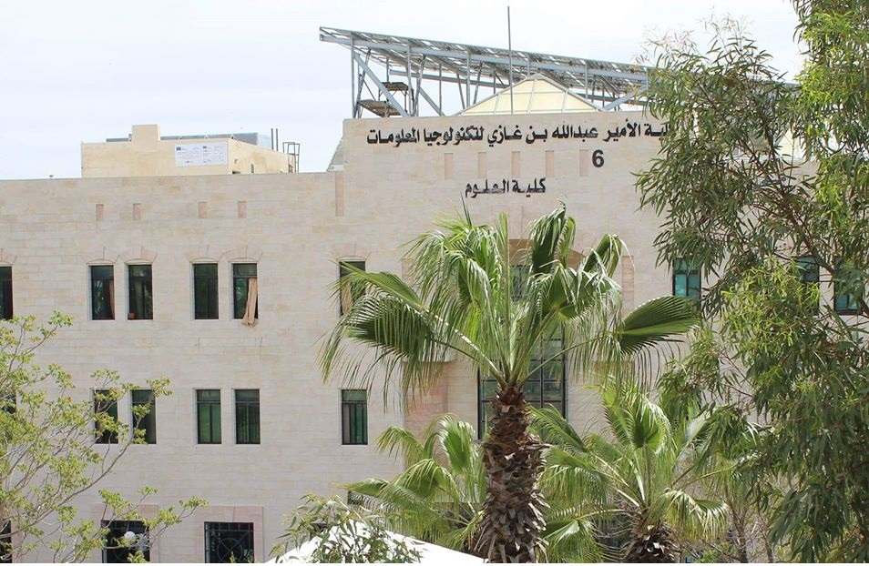

من نحن
فريق من طلاب كلية الامير عبدالله بن غازي لتكنولوجيا المعلومات في جامعة البلقاء التطبيقية
قمنا بتصميم هذا المشروع للفت النظر الى القطاع الزراعي المهمش في وطننا الحبيب
وللمساهمة في تنميته حيث نيسر التواصل وعرض وطلب الخدمات بين الفاعلين في هذا القطاع بمختلف ادوارهم
لتكون خطوة ايجابية في اتجاه دعم قطاع الزراعة على المستوى الوطني